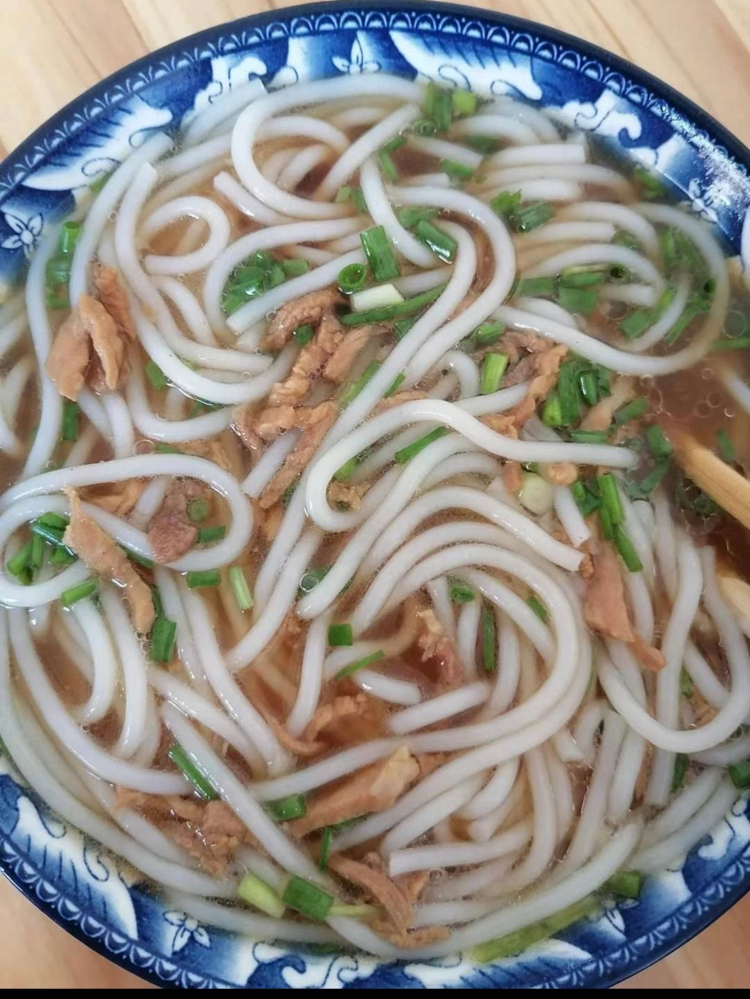
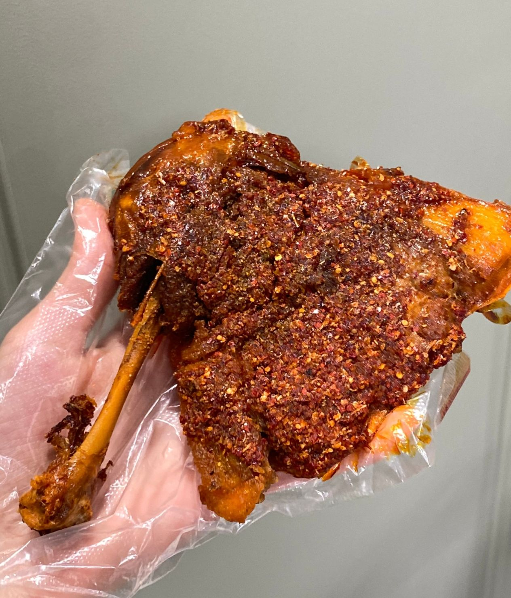
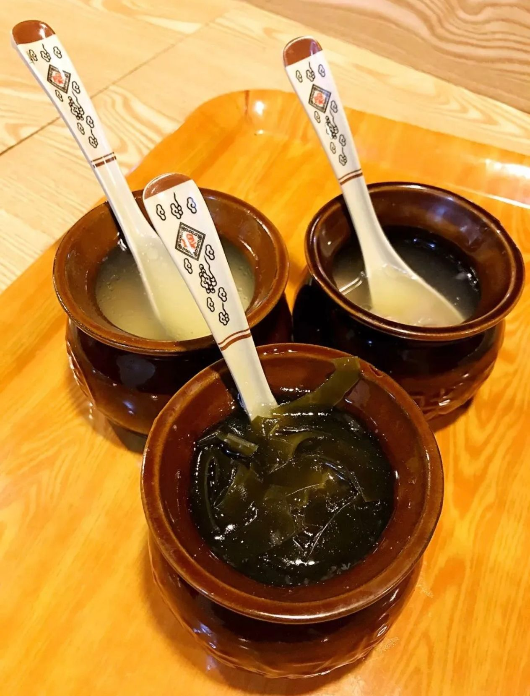

已经成了鱼骨的鱼
故乡美食，牵引着每一位远游者的心绪
铅山烫粉:铅山烫粉以其独特的风味远近闻名。其做工考究，先将上好大米磨成浆，装袋滤干，揣成粉团煮熟后压榨成圆根或片状即成。特点是洁白、细嫩、软滑、爽口。米粉本身由大米制成，所以比以面粉为原料的面食所含的淀粉少很多。同时，米粉所含的油脂和卡路里很少，是减肥的MM首选美食。其吃法多样。最讲究汤底的制作，其工艺各家有异，大致以猪、牛骨、罗汉果和各式佐料熬煮而成，香味浓郁。汤底的用料和做法不同，米粉的风味也不同。在江西，你不能不吃铅山烫粉。

上饶山鸡腿: 上饶山鸡腿是江西省上饶市的一道传统特色小吃，以其独特的口感和制作工艺而闻名。如今的上饶山鸡腿已经成为当地的一张美食名片，深受游客和市民的喜爱。
很多人不知道的是，上饶山鸡腿一开始其实并不是上饶本来就有的特色，也并不是鸡腿而是鸭腿。它本来是上饶火车站才有的，用来诱骗外地游客消费的食品，但由于味道诱人逐渐在市区内流传，后成为了上饶美食的标志。可谓“无巧不成书“。

瓦罐汤:瓦罐汤的历史可以追溯到古代，当时人们利用陶土制成的瓦罐来炖煮食物，以保持食材的原汁原味和营养。随着时间的推移，这种烹饪方式逐渐演变成了一种独特的美食文化，并成为了江西地区的代表性菜肴之一。
我小时候经常生病，每次去医院，唯一能让我开心的就是医院门口小吃店卖的瓦罐汤，再搭配一笼蒸饺，满心欢喜。现在想来，已是好久未能再次享受这等美味了，倒不是吃不到，而是吃不出原来的感觉。也许，这就是鲁迅先生笔下“那夜的好豆”吧！